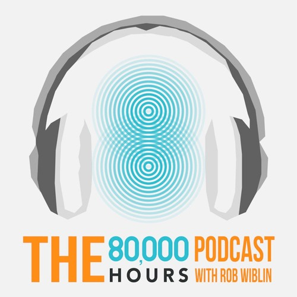
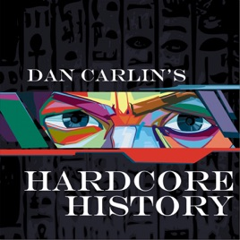
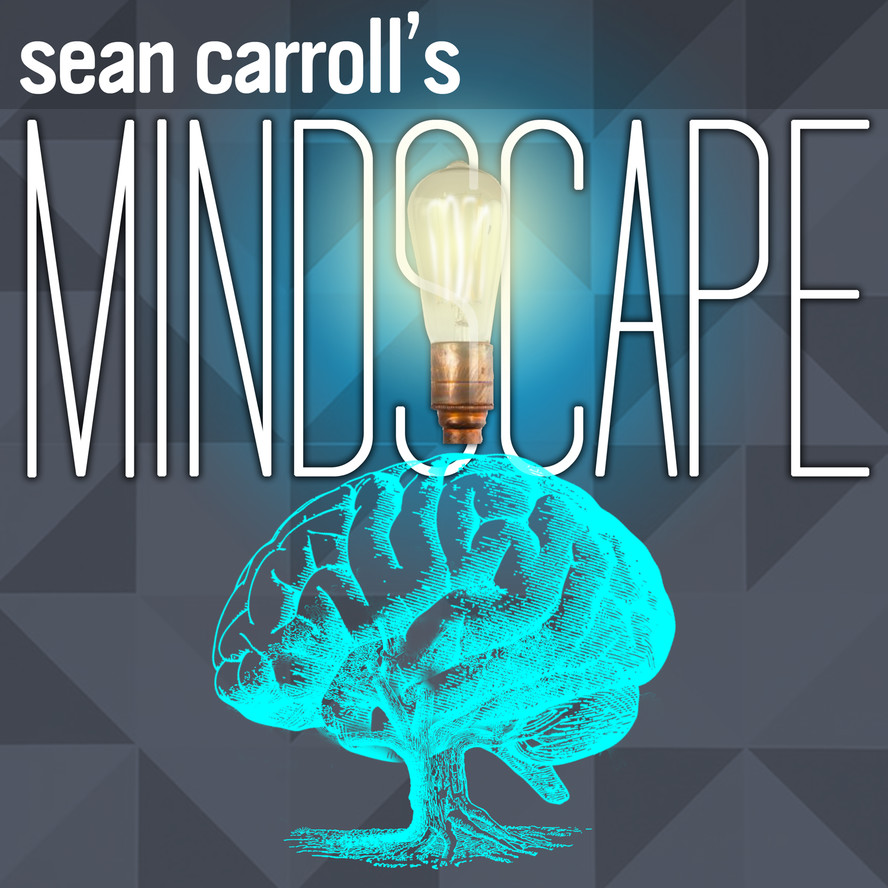

Podcasts
It is curious, how often one mistrusts one's own opinions if they are stated by someone else.
- Douglas Hofstadter, I am a Strange Loop.
Podcasts are my lifeblood. There's no better way to realize how little you know about so many subjects. Here is a list of some of my favourite conversations.
God Tier

80,000 Hours, hosted by Rob Wiblin.
"A show about the world's most pressing problems and how you can use your career to solve them", all in a sexy Australian accent.

Hardcore History, hosted by Dan Carlin.
I could listen to Dan Carlin talk about anything for the rest of my life.
EconTalk, hosted by Russ Roberts.
Forms an unhealthy percentage of my knowledge of economics.
Very Bad Wizards, hosted by David Pizarro and Tamler Somers.
I don't often laugh aloud to podcasts, but when I do it's thanks to VBW.
You are not so smart, hosted by David McRaney.
I always knew, but now it's enforced on a biweekly basis.
Honourable Mention
The Ezra Klein Show, hosted by Ezra Klein.
Whatever your politics, Ezra Klein is a ruthlessly insightful and talented interviewer. He also does a hell of a job advertising razors.

Mindscape, hosted by Sean Carroll.
So ... let's go!
The Portal, hosted by Eric Weinstein.
Complexities simplified and simplicities complicated.
Rationally Speaking, hosted by Julia Galef.
Everyone should aspire to have their disagreements be as productive, insightful, and intellectually honest as Julia Galef's.